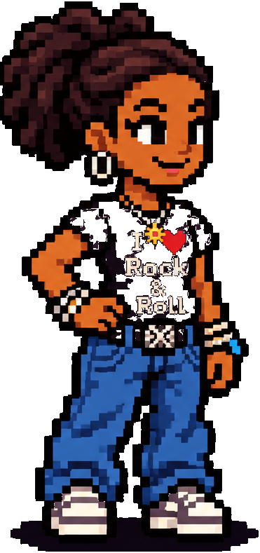
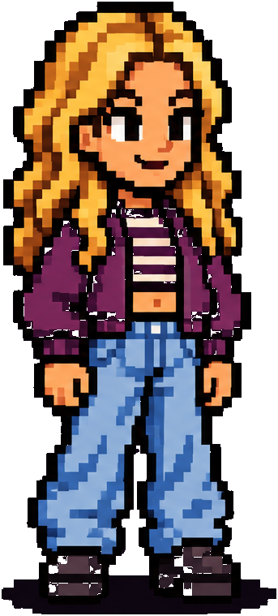

Aufgabe 0/10Richtig: 0Punkte: 0
Höre aufmerksam zu.
Höre das Muster. Nach dem erneuten Einzählen spielst du es im Raster 1 + 2 + 3 + 4 + nach. Bei Pausen nicht klopfen.
Starte mit „Rhythmus vorspielen“.
ARCADE-KANDIDAT-20261108-FULL02 · NICHT ABGENOMMEN
Julia und Tom üben gemeinsam im Keyboardraum.


Höre aufmerksam zu.
Höre das Muster. Nach dem erneuten Einzählen spielst du es im Raster 1 + 2 + 3 + 4 + nach. Bei Pausen nicht klopfen.
Starte mit „Rhythmus vorspielen“.